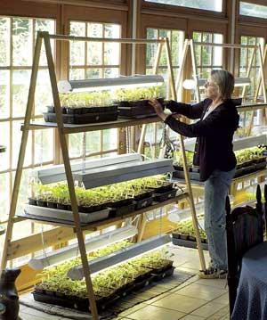

Pat Kennedy, better known to her customers as the “Tomato Lady,” specializes in growing heirloom tomatoes, which she sells from her front porch. It started simply enough. Like many gardeners, she generously gave seedlings to her gardening friends. But when friends of friends also wanted plants, she was obliged to charge them a nominal fee. As the news of Kennedy’s heirloom tomato plants spread throughout Franklin Township, N.J. (her home at the time), she decided to try to make a business of it.
In 1999, the year she started her tomato business, Kennedy grew 500 tomato plants and sold them all. Five years later, she was growing and selling more than 4,000 per year. In addition to home gardeners, Kennedy also sold to chefs and wholesalers, charging $2 to $5 for each plant depending on its size. Satisfied customers who spread the word were the secret of her success. And as a gardener hooked on heirloom tomatoes herself, Kennedy says it’s immensely satisfying to help preserve the heritage of these varieties by introducing them to others. Recently, she and her family moved from New Jersey to Ohio, where Kennedy has resumed the seedling business, calling it “The Culinary Gardener.” Initially she plans to sell to nurseries and market gardeners.
Some of the first people to buy Kennedy’s plants were dinner guests. A number of her signature Italian dishes, such as her homemade garden marinara sauce (see recipe), are prepared with heirloom tomatoes. Friends not only wanted her recipes, but seedlings of specific varieties as well.
Kennedy fondly describes her heirloom tomatoes, which hold a variety of succulent flavors, such as sweet with overtones of tartness. “They’re juicy yet meaty. Some are tiny clusters like grapes, others are the size of plums, or shaped like pears or hearts, still others are frequent winners in ‘giant tomato’ contests,” she says.
And then there are the colors. Ripe heirloom tomatoes come in a wide variety of colors, including white, green, yellow, orange, pink, purple, almost black and “endless shades of red.”
Many home gardeners are as familiar with the famous ‘Brandywine’ heirloom tomato as they are with the popular hybrid ‘Big Boy.’ But not as well-known are other old American tomato varieties, such as ‘Aunt Ginny’s Purple,’ ‘Hillbilly,’ ‘Mortgage Lifter’ and ‘Ernie’s Plump.’ As heirlooms have increased in popularity, growers have introduced many other long-forgotten varieties from different parts of the world, including ‘Oaxacan Jewel’ from Mexico, ‘Thessaloniki’ from Greece, ‘Druzba’ from Bulgaria, ‘Crnkovic Yugoslavian,’ ‘Old Italian,’ ‘Nepal,’ ‘Ukrainian Pear’ and ‘German Red Strawberry.’ Kennedy grows and sells them all.
She’s not rigid in her “heirloom” thinking, though. When she tasted the sugary sweetness of ‘Sungold,’ a yellow-orange, modern cherry-type hybrid, she was impressed enough to include it among the more than 100 tomato varieties she offers to her clients.
Kennedy’s involvement with tomatoes has its origins in the southern Italian town of Reggio di Calabria, home of her grandparents, where flavorful tomatoes are abundant. Like most farmers, Kennedy’s ancestors saved seeds from year to year. As immigrants to the United States, they brought along many of their favorite vegetable and flower seeds, including heirloom tomatoes.
Her grandparents settled in Robertsville, Pa., where they gardened several acres. Of her early days there, Kennedy says, “I grew up surrounded by gardeners, and it was always our job to help in the garden. My grandparents, aunts, uncles and parents had gardens as food sources, not as hobbies.”
More than 30 years ago, when Kennedy married and began raising a family, she started growing her own garden. “In my desire to be a good gardener, I wanted to try all the new varieties,” she says. “What my grandparents grew was old-fashioned. ‘New’ meant hybrids, so my family heirloom varieties had to make way for the hybrids.”
But after years of growing hybrids, she noticed her tomatoes and other vegetables didn’t taste as good as the ones from her childhood. “Articles written about heirlooms in the 1980s encouraged me to try them,” Kennedy says. Among the first she grew was ‘Big Rainbow,’ which is still one of her all-time favorites.
Initially, the seed catalogs of well-known companies - Burpee, Johnny’s and others - satisfied Kennedy’s quest for a varied selection. But as she became more involved with heirlooms, she sought out seed sources that offered rarer choices. Her favorite today is Marianna’s Heirloom Seeds in Dickson, Tenn., which actually grows and evaluates all the heirlooms they sell. Among Kennedy’s other sources are Tomato Growers Supply Co., Baker Creek Heirloom Seeds and Southern Exposure Seed Exchange. She’s also a member of Seed Savers Exchange in Decorah, Iowa, and New Jersey’s Garden State Heirloom Seed Society, for which she used to grow plants (see “Seed Sources” for complete contact information).
As home gardeners learned of Kennedy’s interest in heirlooms, they gave her seeds from tomato varieties that had been in their families for generations. She grows these in an isolated section of her garden (to preclude any cross-pollination) for at least two years. She tests them for flavor, productivity, growth habit and resistance to disease and insects. If they meet her standards, she’ll grow these previously unnamed plants for sale in subsequent seasons.
By the first of each year, Kennedy has received her mail-ordered seeds and scheduled her planting dates. She staggers the dates since her customers request plants at different times. For each group, she starts the plants six weeks before the target availability date. Market growers want their plants in late April, because the sooner they have ripe tomatoes to sell, the greater their profits. Nurseries normally want their plants by Mother’s Day, regardless of the weather. And home gardeners usually wait until the last average frost date has passed.
Kennedy’s tomato growing is a study in patience. For planting, she uses tweezers to place two seeds atop a moistened soil mix loosely packed into conventional, plastic six-pack cells. Then she barely covers the seeds with a pinch of the soil mix, and shields the planted cells with plastic domes. Next, she places the cell packs atop heat mats to accelerate germination, which usually starts in three to five days.
As soon as the seeds sprout, Kennedy removes the dome covers and places the six-packs on stands with fluorescent lights that sit in front of a bank of southwest-facing windows (see photo). Her husband, Bruce, made the stands using 4-foot shop lights. The lights are adjustable, allowing her to position them about 1 inch above the seedlings’ topmost leaves. Automatic timers turn on the lights for 18 hours daily. Natural sunlight also comes in through the windows.
When the tomatoes get their first set of true leaves, Kennedy transplants them. If germination was near 100 percent, resulting in two seedlings in each cell, one is not simply snipped away and sacrificed - Kennedy can’t bear the thought of destroying a perfectly healthy plant. Instead, she separates the seedlings, and each gets its own 2-inch plastic pot. When the plant is four weeks old, it’s transplanted one final time into a 4-inch pot. Both times, the plants are watered with half-strength kelp or fish emulsion. A thin layer of sphagnum moss atop the transplanting medium helps protect seedlings from damping-off diseases. Kennedy thinks double transplanting encourages development of a larger root ball, which makes for hardier plants.
Another of Kennedy’s techniques is to stimulate the seedlings with the gentle breeze from an electric fan for about an hour each day. (Research has shown that breezes, or even just brushing the plants with your hand, will stimulate them to grow sturdier stems.) Seedlings are also bottom-watered to minimize damping off. Finally, seven to 10 days before the plants go on sale, Kennedy moves them to her front porch to harden off. There, they are exposed to wind and fluctuating temperatures, but not to direct sunlight. The double transplanting and the fan treatment combine to make her seedlings short and stocky with a thick root ball, ready for the real world in an outdoor garden.
For gardeners who must deal with leggy seedlings, whether homegrown or purchased late in the season, Kennedy offers this suggestion: Dig a long hole, lay the plant on its side and cover the root ball and most of the stem before gently turning the top of the stem upward. This allows the youngest leaves to poke up barely out of the soil. Roots will develop at each leaf node all along the stem, making for a vigorous mature plant.
To do their best, tomatoes need warmth, water and a little bit of work. When planting seedlings, Kennedy tells her customers to plant them deep - bury the stem up to the bottommost leaves in fertile soil. “Soil is the key to great tomatoes,” she says. “One of my strongest beliefs about gardening and growing anything is the quality of the soil. I work to improve the soil with compost, manure and cover crops. Healthy plants can withstand any attack of disease or insects better than weak ones.” The only soil amendment she adds when planting is a half cup of crushed egg shells, because the calcium helps prevent blossom-end rot. She collects the shells throughout the year for this purpose.
To thrive, tomatoes need full sun all day, Kennedy says. Water them if there is no rain, but avoid overhead sprinklers because water on the leaves promotes diseases. Instead, use a soaker hose on the ground. And before watering, use the fingertip test - insert your index finger into the soil and if it comes out dry, water; if it’s moist, don’t.
After the soil warms naturally, spread an organic mulch around the base of the plants to keep the soil cool, conserve moisture and suppress weeds.
Tomato plants grow best if given some sort of support, Kennedy says. Fruit growing off the ground ripens sooner, is easier to pick and cleaner than its ground-grown counterparts. Some gardeners tie stems to stakes with strips of pantyhose, or you can weave stems in and out of wire fencing. Limit staked and fence-grown tomatoes to two or three stems.
Kennedy says the simplest supports for growing tomatoes are homemade cylindrical cages fashioned from concrete-reinforcing wire (see photo). The generous-sized grid allows easy access for picking ripe fruit. A 60-inch length with a 6-inch grid makes a cage about 20 inches in diameter; its 5-foot height can support even the most vigorous vine.
To prevent cages from toppling in windy weather, Kennedy drives a stake into the ground adjacent to each cage, then ties the stake and cage together. Should stems escape to the outside of a cage, she gently directs them back inside by bending them into an adjacent grid. Her cage-grown tomatoes are never pruned; she believes the plants need all their leaves for photosynthesis and to prevent the fruit from scalding. Kennedy uses store-bought tomato cages only for the ‘Roma’ variety and other short-growing types.
No matter how they’re grown, though, Kennedy says tomatoes are best enjoyed fully ripe. She recommends picking them on a warm, sunny day right off the vine and eating some right there in the garden. (Be sure to bring the salt shaker with you!)
The next best way to relish these fruits - which are loaded with healthy lycopene, an antioxidant that can help prevent cancer and the effects of aging - is in one of Kennedy’s favorite recipes, her garden marinara sauce (see recipe). It can be frozen and enjoyed during the winter as a reminder of your tasty summer harvest.
A writer and photographer for more than 40 years, Walter Chandoha is the author of 100 Garden Tips and Timesavers. He lives on a farm in rural Hunterdon County, N.J., where he grows flowers, vegetables, fruits and herbs.
A colander heaping full of heirloom tomatoes (assorted varieties make the best sauce)
2 tbsp extra virgin olive oil
4 cloves garlic
2 handfuls fresh mixed basil, parsley, oregano and marjoram, chopped
2 tsp kosher salt
Several grinds of fresh pepper
Peel and seed the tomatoes. (For easy peeling, cut an X in the bottom of the tomatoes, then boil them briefly - the skins should slide right off.) In a sauté pan, heat the olive oil over medium heat, then add the garlic. When the cloves turn a honey brown, remove and discard. Put half of the tomatoes in a food processor and pulse to make small chunks. Add to the oil. Pulse the remaining tomatoes with half the herbs. Add to the pan with salt and pepper. Simmer to the desired consistency, 30 to 40 minutes depending on the tomatoes’ water content. Turn off the heat and stir in the remaining herbs. Enjoy. The sauce can be frozen for future use. Serves 8 to 10.
Baker Creek Heirloom Seeds
2278 Baker Creek Road
Mansfield, MO 65704
(866) 653-7333
Johnny’s Selected Seeds
955 Benton Ave.
Winslow, ME 04901
(800) 879-2258
Marianna’s Heirloom Seeds
1955 CCC Road
Dickson, TN 37055
(615) 446-9191
Seed Savers Exchange
3076 North Winn Road
Decorah, IA 52101
(563) 382-5990
Southern Exposure Seed Exchange
P.O. Box 460
Mineral, VA 23117
(540) 894-9480
Tomato Growers Supply Co.
P.O. Box 60015
Fort Myers, FL 33906
(888) 478-7333
|
WALTER CHANDOHA Pat Kennedy, aka the "Tomato Lady," grows and sells unique heirloom tomato plants from her home. |
WALTER CHANDOHA A selection of colorful heirloom tomato varieties. |
 WALTER CHANDOHA Kennedy starts tomato seeds using light stands in front of sunny, south-facing windows. Each stand holds up to 200 seedlings. Her husband, Bruce, made the stands using 4-foot shop lights. The lights are adjustable, allowing her to position them about 1 inch above the seedlings’ topmost leaves. Automatic timers turn on the lights for 18 hours daily. |
|
WALTER CHANDOHA Pat Kennedy, aka the "Tomato Lady," sells heirloom tomato seedlings to wholesalers, as well as to home gardeners, from her front porch. She charges $2 to $5 per plant, depending on its size. |
WALTER CHANDOHA Tomato plants grow best if given some sort of support, Kennedy says. Fruit growing off the ground ripens sooner, is easier to pick and cleaner than its ground-grown counterparts. Some gardeners tie stems to stakes with strips of pantyhose, or you can weave stems in and out of wire fencing. Limit staked and fence-grown tomatoes to two or three stems. Kennedy says the simplest supports for growing tomatoes are homemade cylindrical cages fashioned from concrete-reinforcing wire. The generous-sized grid allows easy access for picking ripe fruit. A 60-inch length with a 6-inch grid makes a cage about 20 inches in diameter; its 5-foot height can support even the most vigorous vine. |
|